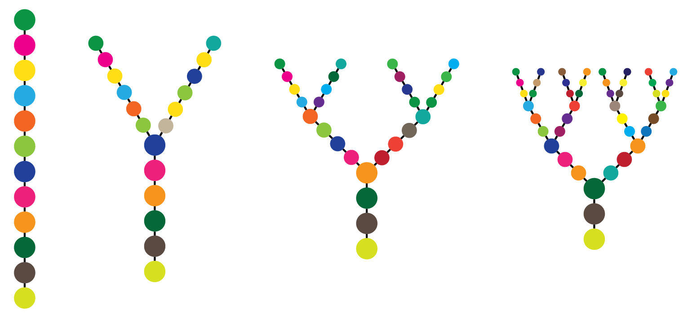
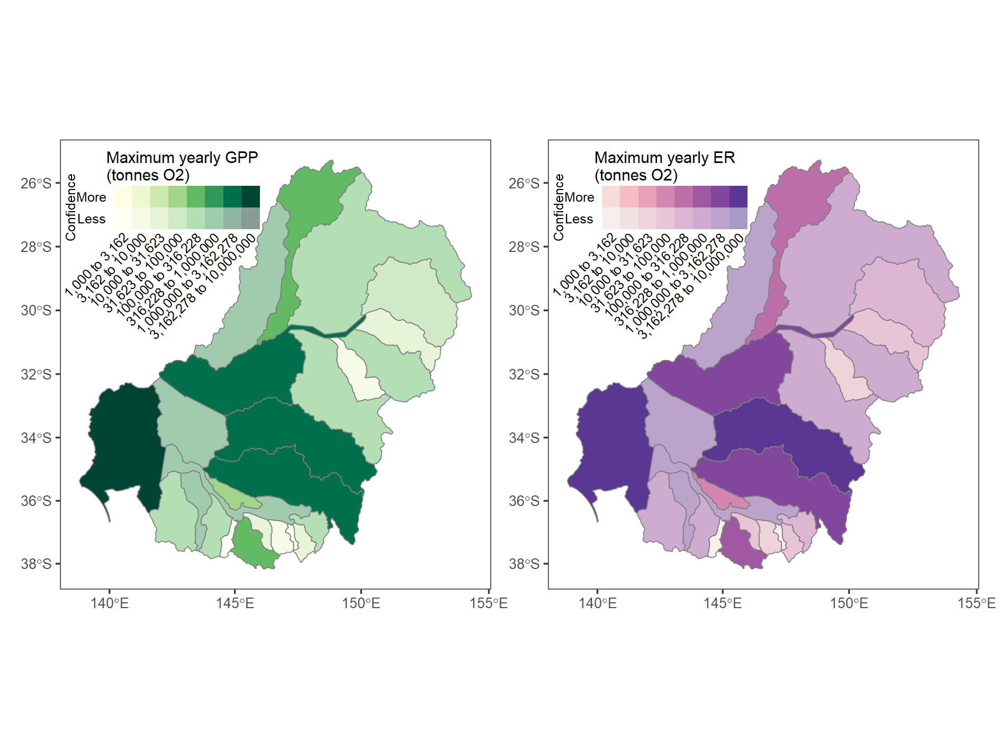

Research
Ecological theory
My background is in theoretical community ecology, where I use analytical theory and probabilistic simulation models to better understand how environmental variation in space and time interact with life history to maintain diversity and community structure. Current work extends this approach to nonstationary environmental variation (e.g. climate change), with a particular focus on how movement and growth across a heterogeneous landscape determines population trajectories.

Linking theory with empirical research
A key finding of the theoretical work is the importance of the sorts of striking natural history that we notice in the field- the particular ways in which species respond to the environment and interact with each other. By linking theoretical work with empirical studies in the field and lab, we improve both our understanding of the theory and the processes maintaining diversity in specific communities. I contribute to a range of empirical studies, typically in freshwater communities and with an emphasis on characterizing species’ responses to the physical environment, density-dependent interactions, and dispersal. Current work focuses on climate responses in a caddisfly community and an emergent disease. Previous work has investigated a range of communities from aquatic insects to desert annual plants to fish.

Models for management of aquatic systems
Issues facing management parallel those in my theoretical and empirical work- how do species’ responses to environmental conditions scale up to large-scale outcomes? Management then adds the question of how alterations of those conditions might alter the outcome. Addressing these questions requires good models of species’ responses to environmental conditions and species interactions, and the ability to scale these up across heterogeneous conditions and compare different scenarios. Using similar approaches and knowledge from my empirical work, I develop these response models as well as the capacity to scale in space and time and compare different scenarios. My current work in this area is developing tools to assess responses to climate change and climate change adaptations in the Murray-Darling Basin in Australia. A major component of this work is developing robust, repeatable, and transparent modelling approaches, as well as data visualization and communication to make this work actionable by water managers and agencies.

Recent projects


Analysis and methods development
Capturing the data needed for linking theory to empirical work or building large-scale management models often requires developing new methods and analytical techniques or applying them in new ways. I enjoy the creativity inherent in this process, whether it is to adapt beta-binomial logistic regression for testing density-dependence in infection rates or modifying cameras to take underwater night vision movies of insect egg-laying.
In the course of my work I develop R packages and analysis workflows (some of which are available publicly and some not (yet)). These typically are the core output of my theoretical and modelling work, as well as the analysis of empirical data. Others simply arise as side projects or infrastructure to allow other projects to proceed. As is likely typical of most people writing code, the final, working, code is the end product of quite a lot of experimentation and figuring out new approaches. I have begun documenting this process both for my future self and others.